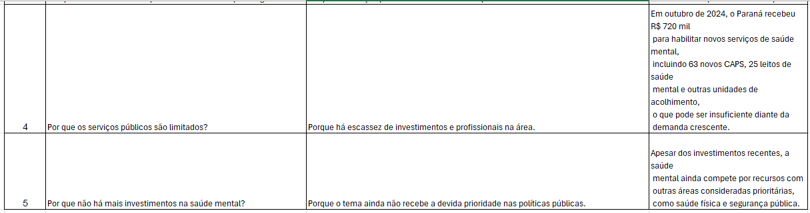
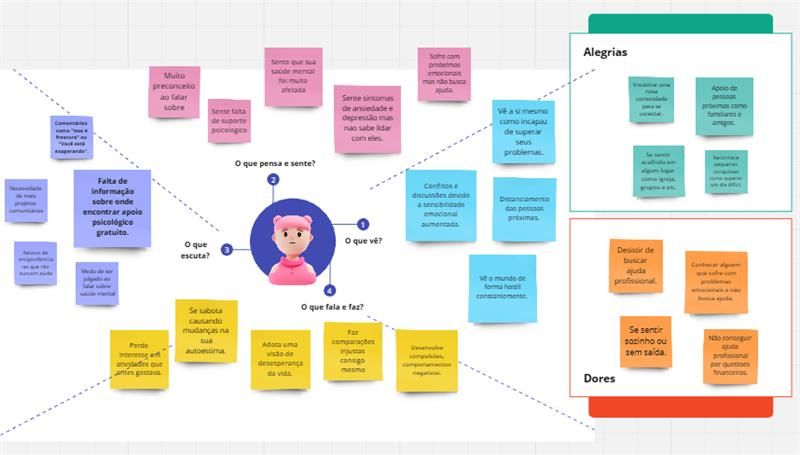
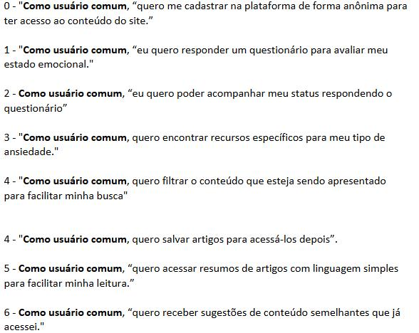
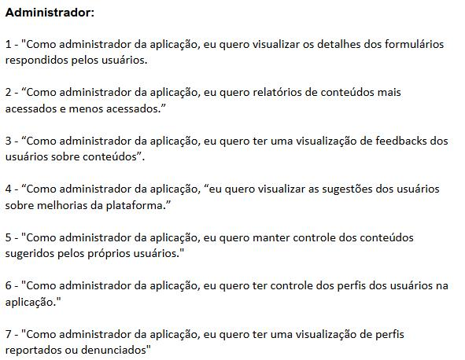
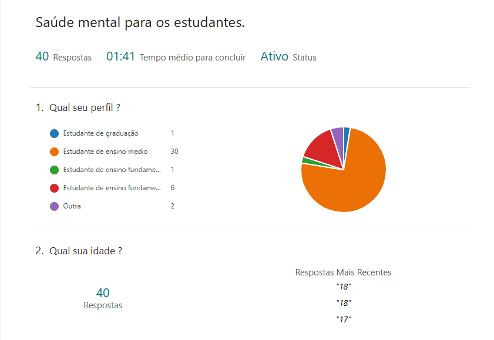

Descrição do Problema
O acesso limitado a informações confiáveis e a suporte psicológico representa uma barreira crítica na área da saúde mental, especialmente para indivíduos em situações de vulnerabilidade socioeconômica e geográfica. Muitas pessoas enfrentam a impossibilidade de arcar com custos elevados de consultas presenciais ou vivem em regiões onde há uma evidente escassez de profissionais especializados. Esse cenário gera um ciclo de negligência e falta de suporte, resultando em sofrimento prolongado e agravamento dos problemas de saúde mental.
Além disso, a ausência de recursos acessíveis para educação em saúde mental e apoio psicológico promove uma visão estigmatizada da busca por ajuda. A combinação da falta de informações adequadas, o isolamento e as dificuldades financeiras formam um contexto desafiador que impede que muitas pessoas obtenham o suporte necessário para melhorar sua qualidade de vida.
Justificativa
A falta de atenção à saúde mental tem impactos devastadores em toda a sociedade. A nível individual, provoca sofrimento emocional crônico, agrava problemas físicos. A falta de atenção a saúde mental, pode ocorrer por diversos fatores como situação financeira, preconceitos ao falar e desenvolver sobre, falta de conhecimento de pontos de ajuda e atendimento, rotinas exaustivas causados por trabalhos exaustivos etc. Podem ser observados também através de estudos e relatórios, como, “O Brasil tem terceiro pior índice de saúde mental em ranking com 64 países” revela relatório do Estado Mental do Mundo..
Análise da Causa Raiz (5 Porquês)


Mapa da Empatia
A imagem mostra um Mapa da Empatia, uma ferramenta usada para compreender melhor um determinado público ou perfil, explorando suas percepções, sentimentos e comportamentos. No centro do mapa, há uma figura representando a pessoa analisada, e ao redor dela, diferentes quadrantes respondem a perguntas como “O que pensa e sente?”, “O que vê?”, “O que escuta?”, e “O que fala e faz?”. Além disso, há seções destacando alegrias e dores dessa pessoa.
Proposta de Solução
A implementação de uma biblioteca online de saúde mental traz ganhos tangíveis e comprovados, capazes de transformar vidas e aliviar pressões sociais. Os números não mentem: experiências internacionais demonstram que plataformas digitais bem estruturadas podem reduzir sintomas de transtornos mentais em até 40%.
Canvas do Projeto
Resumo dos principais pontos do canvas:
Perguntas norteadoras:
- Características do público-alvo: pessoas com baixa renda e pouca conscientização sobre a importância da saúde mental.
- Necessidades dos usuários: buscam autoconhecimento e apoio psicológico, mas enfrentam dificuldades de acesso.
- Hábitos de consumo e comportamento: preferem tecnologias intuitivas e soluções personalizadas.
Desafio e Justificativa:
- O problema central é o difícil acesso a suporte psicológico, especialmente para pessoas que não têm condições financeiras.
- A plataforma será centrada no usuário e oferecerá informações relevantes sobre saúde mental.
- A crescente demanda por apoio psicológico justifica a criação do projeto
Hipótese:
- A proposta inclui uma biblioteca de informações sobre saúde mental, oferecendo conteúdo acessível como vídeos e artigos.
- Para engajamento, pode haver um sistema de gamificação e um mapa interativo com locais de apoio psicológico.
- O sucesso dependerá dos recursos disponíveis e da aceitação dos usuários.
Ganhos esperados para os usuários:
- Equilíbrio emocional.
- Redução do estigma sobre saúde mental.
- Autoconhecimento.
- Comunidade de apoio.
Desafios identificados:
- Dificuldade inicial em buscar ajuda.
- Medo de interagir com novas pessoas.
- Sensação de solidão.
- Ausência de ajuda profissional.
Expectativas e Impacto:
- Espera-se que a plataforma ofereça suporte e transforme vidas.
- Estudos indicam que plataformas bem estruturadas podem reduzir sintomas de transtornos mentais em até 40%
Stakeholders:
- Devem ser consultados especialistas como professores, psicólogos, psiquiatras e terapeutas ocupacionais.
- As áreas mais impactadas serão aquelas que enfrentam dificuldades financeiras.
- O foco está em pessoas que passam por problemas psicológicos e não podem pagar por consultas.
Histórias do Usuário


Diagramas de Caso de Uso e Fluxo de Negócio
A base de conhecimento é uma plataforma digital que organiza informações sobre ansiedade de forma acessível e prática com relação as funcionalidades. Prototipação de histórias de usuários e diagrama de fluxo faz parte dos processos do projeto integrador web (piw), as histórias de usuários definem funcionalidades na qual são baseados em pesquisas (forms), nelas são apresentadas diversas sugestões. Sobre tais funcionalidades, conteúdos, resumos de artigos, vídeos, fazem partes dos conteúdos que serão introduzidos na base de conhecimento, também vão ser adicionados conteúdos sugeridos pelos usuários da plataforma. As funcionalidades de administradores são alinhadas as funções dos usuários ou similares, afinal essas funções se complementam. .
resultado de pesquisa
A fim de compreender melhor o público-alvo e embasar as decisões do projeto integrador, foi realizada uma pesquisa por meio da plataforma Microsoft Forms, disponibilizada para mais de 40 pessoas. As perguntas abordaram temas relacionados à saúde mental, hábitos de autocuidado e preferências sobre recursos em aplicativos voltados para esse tema. A imagem a seguir apresenta os gráfico com os resultados obtido, que servirão de base para orientar o desenvolvimento da proposta, garantindo que ela esteja alinhada com as reais necessidades e expectativas dos usuários.
